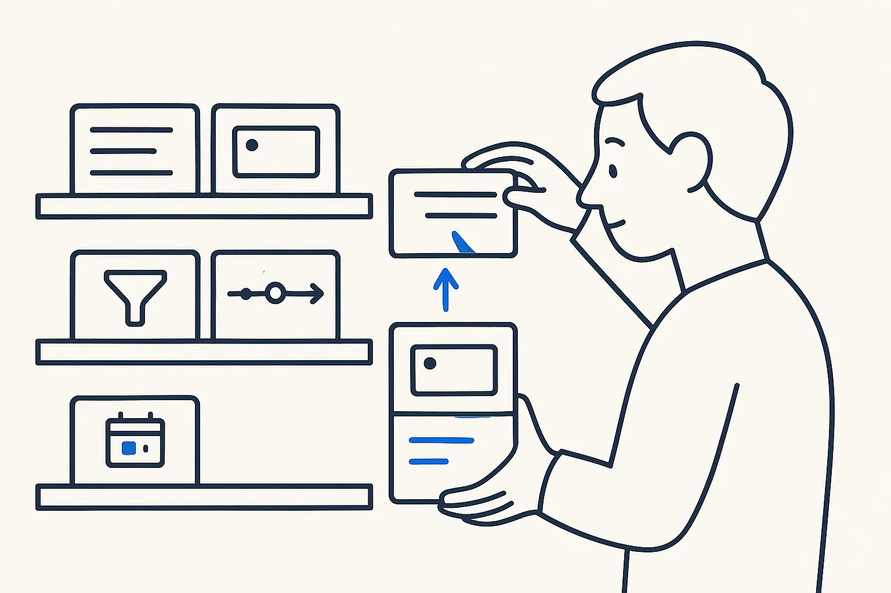

Building blocks that make the next app quick
My own system runs on a small set of reusable pieces — list, table, cards, timeline, board, document viewer, filters, search and a cockpit pattern. A new screen is mostly configuration.

- Replaces
- starting every app from scratch
- Built with
- one Python server without frameworks, one HTML file, shared components, menus as configuration
- In numbers
- 45 cockpits · 209 render functions · 156 areas from configuration · 13 apps sharing one shell
The situation
When people build their first app with AI, they build everything: the menu, the list, the filter, the detail page. The second app repeats it, slightly differently. By the fifth app there are five versions of the same list, each with its own bug.
What I built
One web app over my whole personal system, built almost entirely with AI, around a fixed set of building blocks:
- Views: list, table, cards, timeline, board and a document viewer — the same components for receipts, people, trips or incidents.
- Filters and facets by entity, period and status, and a global search across documents, notes, photos, mail and calendar.
- A cockpit pattern: one entity with its related items, notes and actions on one screen. There are 45 of them, from accounts and agreements to meetings and receipts.
- Saved views as queries, in the query language of a reading app I like.
- Menus and screens as configuration: 21 menus and 156 areas are rows in a table, loaded from a file, not code.
- A shared shell used by 13 small apps, so they all have the same menu and look.
How a new screen is added
Add an area to the configuration — label, entity, which view, which filter — and, if needed, one import script for the data. The building blocks do the rest.
What I learned on the way
Copies breed bugs. Three copies of the same path logic gave three different bugs; most screens handled the database connection their own way until one shared module replaced them. Building blocks are not a nice-to-have — they are how a system built by AI stays correct.
Honest note
It is built for one person on a private network, without a login of its own. A company version starts with access control.
Start on a Build Day
Bring two lists you want to see. We build one list view and one card view, and then add the second list as configuration only.
Concepts behind it
- Decompose and Compose — Break the complex whole into small, self-contained parts you can name, model and check one at a time — the core move of thinking in structures.
- Reusable Skills — Reusable, AI-readable units of behavior — a skill packages how to do one thing well, versioned and callable, so people and AI apply it the same way every time.
- Compounding Efficiency — Spend time, money and attention where they compound — cut the meetings, the licensed bloat and the unstructured chat that add nothing, and put the resource into structure that pays back.